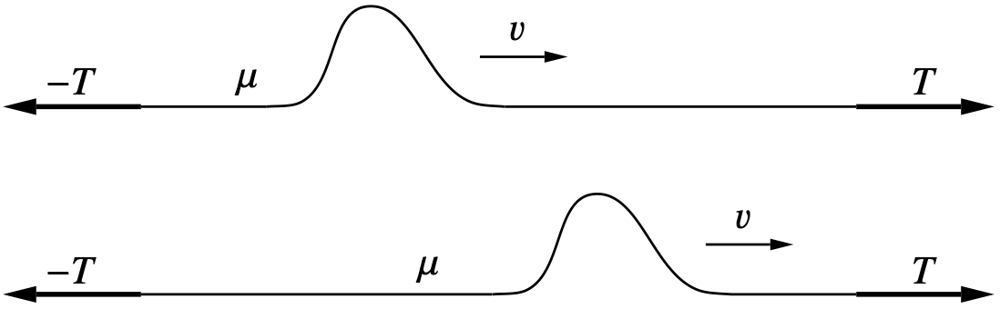
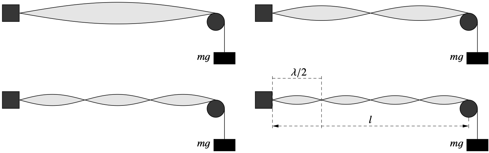
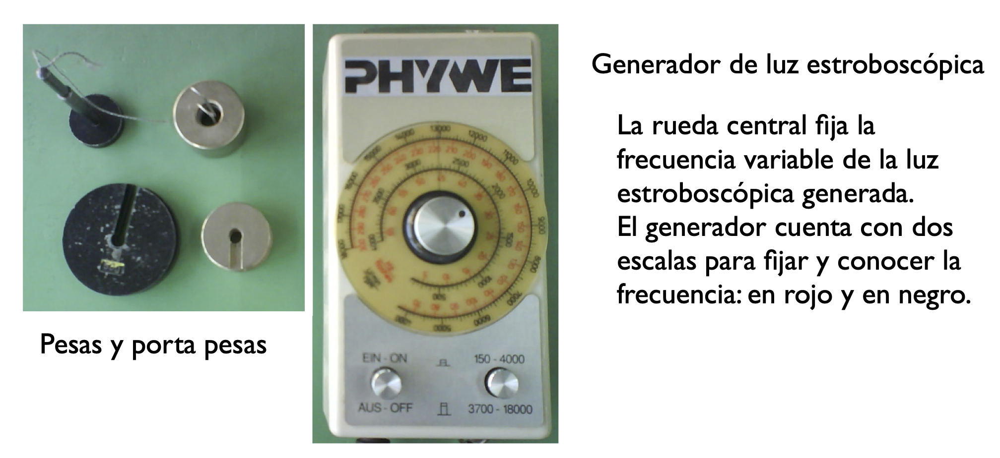
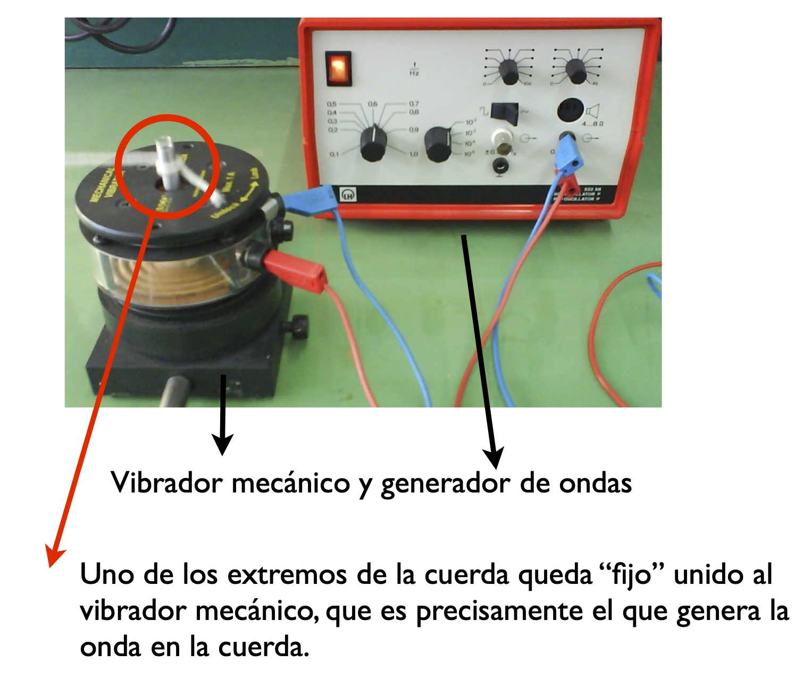
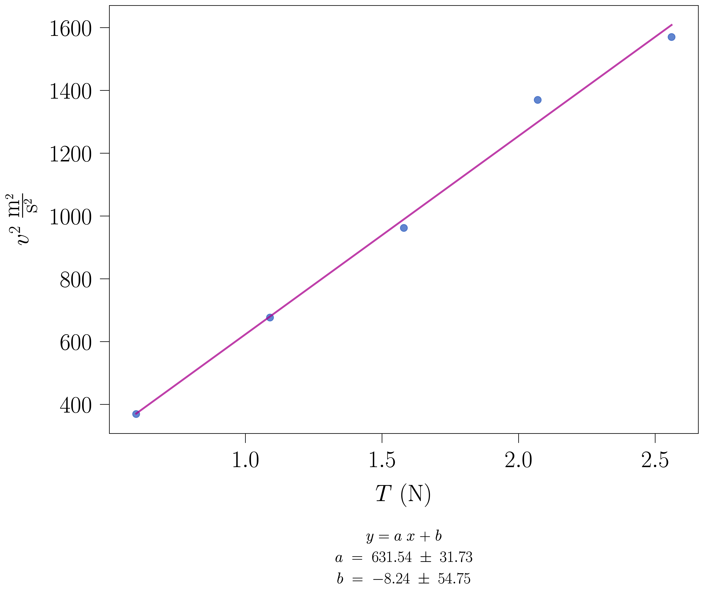
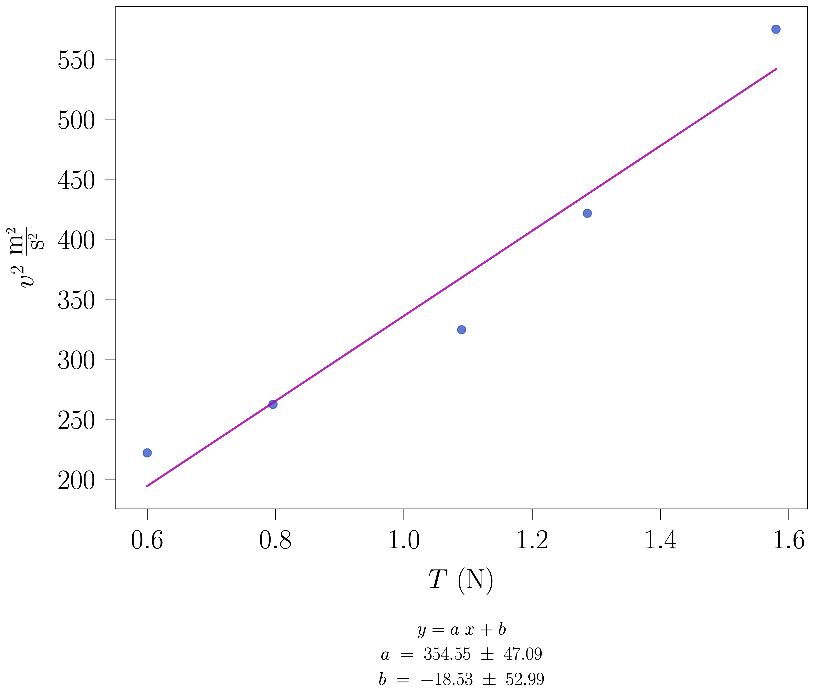
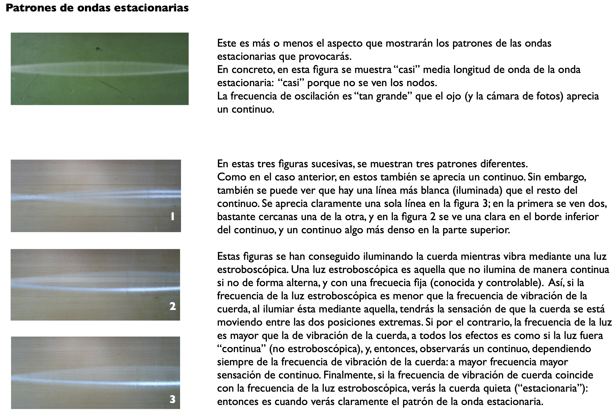

En resumenModos n = 1…4 en cuerda rígida y elástica; v² frente a T y densidad lineal de masa.
Ondas estacionarias en una cuerda con extremos fijos
Prácticas de Laboratorio — UNED
Josu M. Igartua
2024-10-26
Resumen
Ondas estacionarias en una cuerda con extremos fijos; identificación de los modos n=1,\ldots,4 para distintas tensiones; ajuste v^{2} vs T por mínimos cuadrados y extracción de la densidad lineal de masa \mu. Comparativa entre cuerda rígida y cuerda elástica.
Objetivos
Estudiar las relaciones entre las magnitudes que caracterizan las ondas estacionarias en una cuerda con extremos fijos.
Material
Generador de funciones
Oscilador mecánico
Cuerda elástica
Pesas
Cinta métrica
Repaso de teoría
Elasticidad
Propagación de ondas en cuerdas
Ondas estacionarias
Fundamento teórico
Una cuerda tensa es un sistema en el que es posible la propagación de perturbaciones en una dirección perpendicular a ella, es decir, la aparición de ondas transversales. Sea x la dirección en la que está situada la cuerda, T la tensión o fuerza tangencial a que está sometida, y \mu, su masa por unidad de longitud o densidad lineal de masa. E(x,t) representa el campo de desplazamientos respecto a su estado de equilibrio. Puede demostrarse que una perturbación de ese tipo cumple la siguiente ecuación:
que es la ecuación de ondas, y asegura que dicha perturbación se propagará a lo largo de la cuerda con la velocidad:
v=\sqrt{\frac{T}{\mu}}
\tag{2}

Dicha perturbación se transmitirá inalterada mientras no exista una discontinuidad en la cuerda. Sin embargo, la existencia de discontinuidades (cambios en la densidad de la masa, imposición de alguna condición de contorno, etc) producirá la aparición de ondas reflejadas por la discontinuidad, y transmitidas más allá de la misma. En esta práctica, se trata de estudiar las ondas estacionarias que se producen como resultado de imponer que los extremos de la cuerda deban permanecer fijos. En tal caso, se produce la aparición de un patrón estacionario, no cambiante en el tiempo, siempre que la longitud de la onda del modo excitado no sea un divisor entero de 2l, donde l es la longitud de la cuerda: \lambda_{n}=\frac{2l}{n}. En otras palabras, puesto que la longitud de onda está relacionada con la frecuencia, a través de la expresión \lambda_{n}=\frac{v}{f_{n}}, estableceremos una onda estacionaria en una cuerda con los dos extremos fijos, siempre que la frecuencia tome uno de los siguientes valores:
Para cada una de estas ondas estacionarias cada punto de la cuerda vibra con una amplitud fija en el tiempo y dependiente de la posición, de acuerdo con la ecuación:
Los patrones de vibración toman el siguiente aspecto:

Descripción del aparato
El dispositivo experimental permite la generación de ondas en una cuerda, mediante un vibrador mecánico alimentado por un generador en el que son variables la frecuencia y la amplitud. El material que forma la cuerda es goma, altamente deformable (lo que provoca que la densidad de masa no sea la misma para diferentes valores de la tensión aplicada) y no lineal, esto es, no existe proporcionalidad entre la tensión y la deformación. La vibración mecánica generada se transmite directamente al extremo de una cuerda, por ejemplo. El otro extremo de la cuerda se sujeta, pasándolo por una polea, a diversas masas, pudiéndose así variar la tensión aplicada de manera controlada. Variando la frecuencia y la tensión es posible verificar las expresiones teóricas anteriores.


Método operatorio
El procedimiento se aplica, sucesivamente, a dos cuerdas distintas: primero a la cuerda rígida (no elástica) y después a la cuerda elástica (goma). Los pasos 1-5 describen el trabajo con la cuerda rígida; el paso 6 repite el proceso con la cuerda elástica; el paso 7 compara ambos resultados.
1
Medid la longitud l de la cuerda entre los dos extremos fijos, es decir, entre el punto de enganche al vibrador y el punto de apoyo de la polea.
Es conveniente medir l varias veces con la cinta métrica y tomar el valor medio como valor experimental. El error de l no debería superar el milímetro si el montaje se mantiene firme.
2
Montad el dispositivo con la cuerda rígida (no elástica) según el esquema del apartado Descripción del aparato. Haced pasar un extremo de la cuerda por la polea y colgad de él una masa M.
La tensión aplicada es T = Mg, siendo g = 9{,}81\ \textrm{m/s}^{2}.
Trabajaréis con cinco masas distintas, en el intervalo aproximado M\in[60,\,260]\ \textrm{g}, de modo que las cinco tensiones cubran un factor 4-5 entre la menor y la mayor. La cuerda rígida soporta este rango sin deformarse apreciablemente, lo que permite medir con el modelo teórico bien definido.
3
Para cada tensión T, buscad con el generador las frecuencias de resonanciaf_n que producen un patrón estacionario estable para los cuatro primeros modos, n=1, 2, 3, 4.
Para encontrar cada modo, id variando lentamente la frecuencia del generador hasta que el patrón de nodos y vientres sea lo más nítido posible. Anotad la frecuencia leída en el generador junto con su incertidumbre (resolución del aparato).
Notas:
Mantened la amplitud del generador suficientemente pequeña: basta con que se vea claramente el patrón. Una amplitud excesiva hace oscilar la polea y desestabiliza los nodos.
La frecuencia fundamental f_{1} aparece para longitudes de onda \lambda_{1}=2l; los armónicos superiores se localizan aproximadamente en múltiplos enteros de f_{1}, lo que sirve de guía para la búsqueda.
4
Para cada pareja (T, n), la longitud de onda teórica es \lambda_{n}=2l/n y la velocidad experimental, v_{n}=\lambda_{n}\, f_{n}.
Para cada tensión, calculad la velocidad media \bar v(T) promediando los cuatro valores v_{n} obtenidos (uno por armónico) y estimad su error como la desviación estándar de la media.
Datos experimentales
A continuación se muestran, a título de ejemplo, los datos recogidos en el laboratorio para la cuerda rígida.
M (g)
T (N)
n
f_{n}^{\textrm{exp}} (Hz)
\lambda_{n} (m)
v_{n} (m/s)
\bar v (m/s)
61.2
0.600
1
8.61
2.240
19.28
19.22
2
17.22
1.120
19.29
3
25.65
0.747
19.15
4
34.21
0.560
19.16
111.2
1.090
1
11.52
2.240
25.81
26.01
2
23.46
1.120
26.28
3
34.72
0.747
25.93
4
46.49
0.560
26.04
161.2
1.580
1
13.82
2.240
30.96
31.02
2
27.36
1.120
30.64
3
41.63
0.747
31.08
4
56.04
0.560
31.38
211.2
2.070
1
17.90
2.240
40.11
37.01
2
31.98
1.120
35.81
3
48.11
0.747
35.92
4
64.65
0.560
36.20
261.2
2.560
1
17.89
2.240
40.08
39.62
2
34.97
1.120
39.16
3
53.13
0.747
39.67
4
70.69
0.560
39.59
5
Representad gráficamente \bar v^{2} frente a T y realizad un ajuste lineal por mínimos cuadradosv^{2}=a\,T+b.
De acuerdo con la Ecuación 2, la pendiente del ajuste es a=1/\mu, por lo que la densidad lineal de masa de la cuerda es \mu=1/a, y su error, \Delta\mu=\Delta a/a^{2}. La ordenada en el origen, b, debería ser compatible con cero dentro de su error.
Representación gráfica: v^{2} vs T — cuerda rígida

Para los datos de la tabla anterior el ajuste obtenido es a=631{,}54\pm 31{,}73\ \textrm{m}^{2}\textrm{s}^{-2}\textrm{N}^{-1} y b=-8{,}24\pm 54{,}75\ \textrm{m}^{2}\textrm{s}^{-2}.
Los puntos siguen la recta con poca dispersión y la ordenada en el origen es compatible con cero dentro de su error: el modelo teórico v=\sqrt{T/\mu} describe bien el sistema.
6
Sustituid la cuerda rígida por la cuerda elástica (goma) y repetid los pasos 2 a 5.
Como la goma se deforma sensiblemente bajo tensión, conviene trabajar en un intervalo de masas más estrecho, aproximadamente M\in[60,\,160]\ \textrm{g}. Incluso en ese rango la cuerda se alarga de manera apreciable al aumentar la tensión; observaréis que eso afecta a la calidad del ajuste.
Datos experimentales
Valores recogidos, a título de ejemplo, para la cuerda elástica:
M (g)
T (N)
n
f_{n}^{\textrm{exp}} (Hz)
\lambda_{n} (m)
v_{n} (m/s)
\bar v (m/s)
61.2
0.600
1
6.49
2.240
14.54
14.90
2
19.66
0.747
14.68
3
25.90
0.560
14.50
4
35.40
0.448
15.86
81.0
0.796
1
21.08
0.747
15.74
16.19
2
29.56
0.560
16.55
3
36.94
0.448
16.55
4
42.69
0.373
15.94
111.2
1.090
1
15.88
1.120
17.79
18.01
2
24.85
0.747
18.55
3
39.35
0.448
17.63
4
32.29
0.560
18.08
131.0
1.286
1
26.94
0.747
20.11
20.53
2
36.99
0.560
20.72
3
46.26
0.448
20.73
161.0
1.580
1
10.32
2.240
23.13
23.98
2
21.99
1.120
24.64
3
31.87
0.747
23.79
4
43.47
0.560
24.34
Representación gráfica: v^{2} vs T — cuerda elástica

Para estos datos el ajuste obtenido es a=354{,}55\pm 47{,}09\ \textrm{m}^{2}\textrm{s}^{-2}\textrm{N}^{-1} y b=-18{,}53\pm 52{,}99\ \textrm{m}^{2}\textrm{s}^{-2}.
La dispersión de los puntos es mayor que en la cuerda rígida y la ordenada en el origen sólo es compatible con cero dentro de un error relativamente grande: señal de que la ecuación v=\sqrt{T/\mu} con \mu constante no describe estrictamente la cuerda elástica.
7
Comparad los dos ajustes y discutid el resultado.
Lo que se espera observar:
En la cuerda rígida el ajuste v^{2} vs T es casi perfecto. La densidad lineal \mu se obtiene directamente de la pendiente. El modelo teórico (ecuaciones Ecuación 1 a Ecuación 4) describe el sistema.
En la cuerda elástica la dispersión es mucho mayor: al aumentar T la goma se alarga y, por tanto, disminuye su densidad lineal \mu. En consecuencia, \mu deja de ser una constante del material y la ecuación v=\sqrt{T/\mu} no describe estrictamente el sistema.
Razonad por qué, a pesar de eso, la pendiente del ajuste en la cuerda elástica proporciona una estimación efectiva de \mu, y comentad en qué condiciones esa estimación es o no aceptable.
8
Visualización del patrón estacionario: a ojo desnudo la cuerda en resonancia aparece como una banda continua difusa, porque la frecuencia de vibración es mayor que la cadencia con la que se actualiza la imagen visual.
Si se dispone de una luz estroboscópica, iluminad la cuerda con ella y observad cómo cambia la imagen al variar la frecuencia del estroboscopio respecto a la frecuencia de vibración. Cuando ambas frecuencias coinciden, la cuerda aparece quieta y se aprecia claramente el patrón de nodos y vientres.

Material complementario
En los siguientes vídeos se puede observar lo que se propone en esta práctica:
Ondas Estacionarias en una cuerda
https://www.youtube.com/embed/iUNIoGvwvh0
El autor de este vídeo y su licencia se encuentra en este enlace: http://rua.ua.es/dspace/handle/10045/45805
Standing Waves on String + Strobe Light
https://www.youtube.com/embed/rkeIubVQ0N8
El autor de este vídeo y su licencia se encuentra en este enlace: http://rua.ua.es/dspace/handle/10045/45805
Strobe Lights and String - Standing Waves
https://www.youtube.com/embed/ArPdQ-bxlqU
El autor de este vídeo y su licencia se encuentra en este enlace: http://rua.ua.es/dspace/handle/10045/45805
Referencias
Tipler, P. A. y Mosca, G., Física para la ciencia y la tecnología, Vol. 1, Ed. Reverté. Capítulo sobre ondas mecánicas y ondas estacionarias en cuerdas.
Serway, R. A. y Jewett, J. W., Física para ciencias e ingeniería, Vol. 1, Cengage Learning. Capítulo sobre superposición y ondas estacionarias.
Alonso, M. y Finn, E. J., Física, Vol. 2: Campos y ondas, Addison-Wesley.